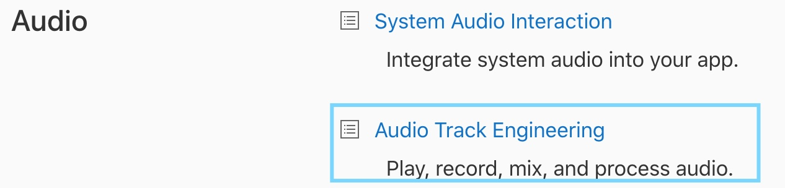
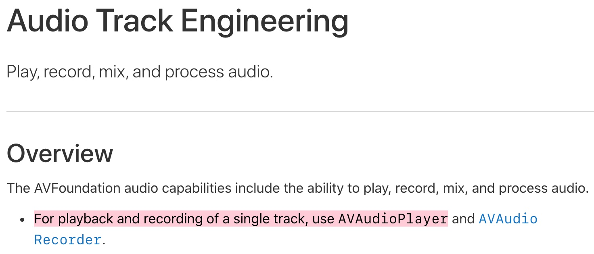
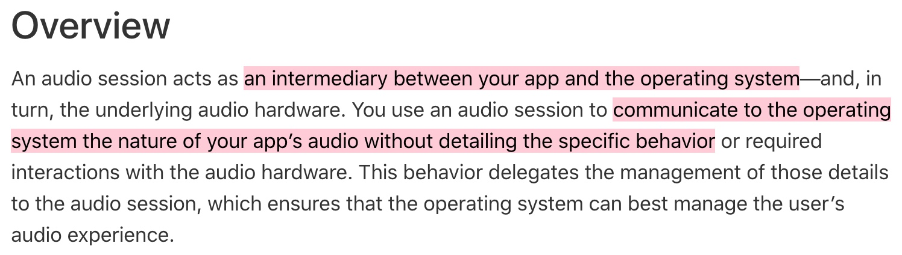
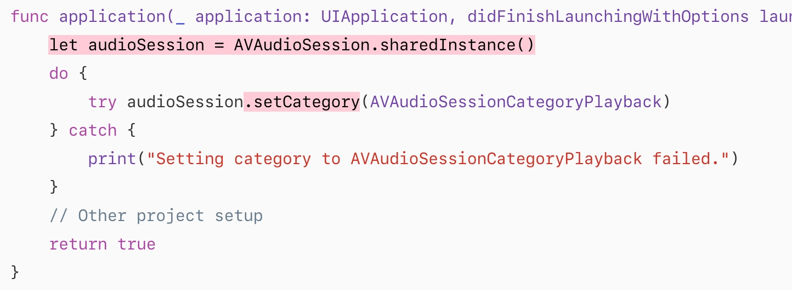
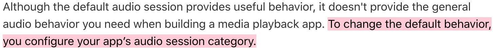
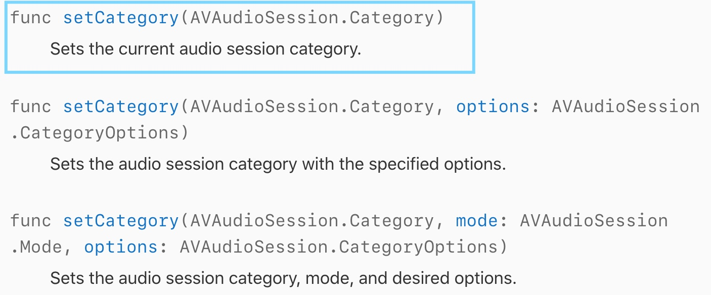
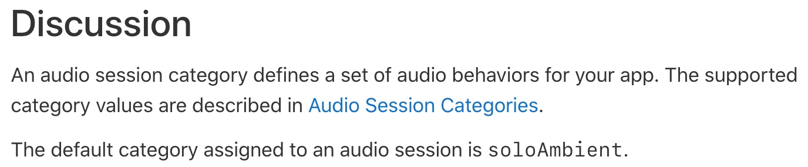
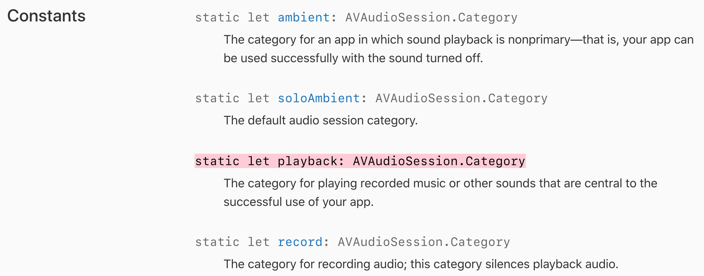
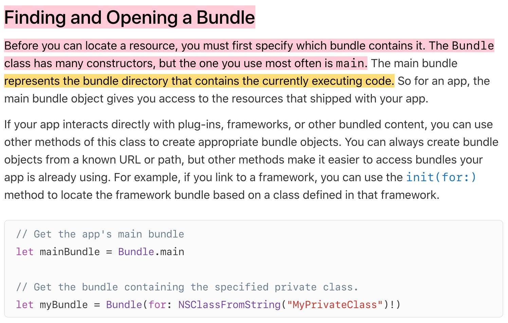
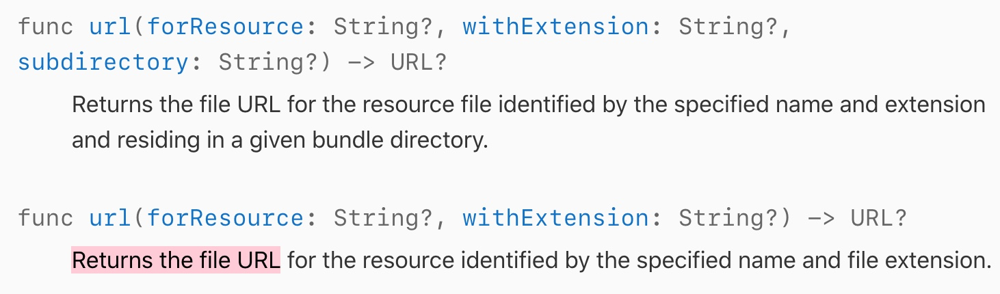

대략 모르던 api 를 알아가는 시나리오는 이런 느낌인 것 같음
(예) How to play sound?
(1) Stack Overflow 답변을 찾아봄
일단 import AVFoundation 했으니 이것부터 검색해봄
우리는 play sound 하려고 하니까 이걸 클릭

single track play 하려는게 맞으니까 AVAudioPlayer 를 클릭

아 AVAudioPlayer를 당연히 init을 해야될텐데 우리 코드에선 init 함수중 세번째껄 써서 init 을 했구나

아하 ios 랑도 interaction 하는 데 중간에서 조율해주는 애로군
답변에서 나온 .sharedInstance() 로 이닛을 해주는데 여기서도 이렇게 했군

그리고 .setCategory 한 것은 정확히 세션의 행동을 커스터마이징 하기 위한 것이로군
밑에보니 audioSession object 에 쓸 수 있는 function 이 이렇게 나와있음.
그 중에서도 우린 첫번째 .setCategory 함수를 쓴 것이고,
그 안에는 AvAudioSession.Category 라는 class에 속한 object가 들어가겠군

클릭해보니 별 설명이 없어서 Audito Session Categories 를 클릭해봄

클릭해보니 AVAudioSession.Category 에는 이런 여러가지 Constants 가 있고
잘은 모르겠지만 아마 class의 instance라서 문법이 AVAudioSession.Category.playback 이렇게 된 것 같음

마지막으로 Bundle 이라는 애가 있었음

아 Bundle.main 을 하면 현재 돌아가는 code 의 directory 를 의미하는 것이고, Bundle 도 하나 객체를 생성해서 쓰는 것이구나

Bundle obj 에 쓸 수 있는 여러 함수중 url 을 써서 url 을 리턴한 것임.